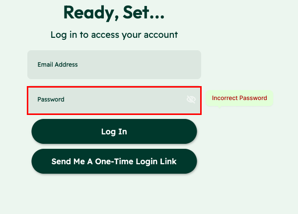
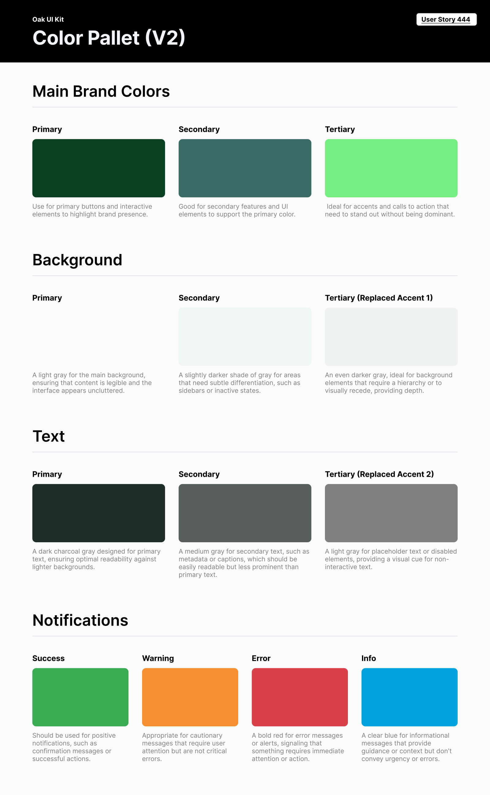
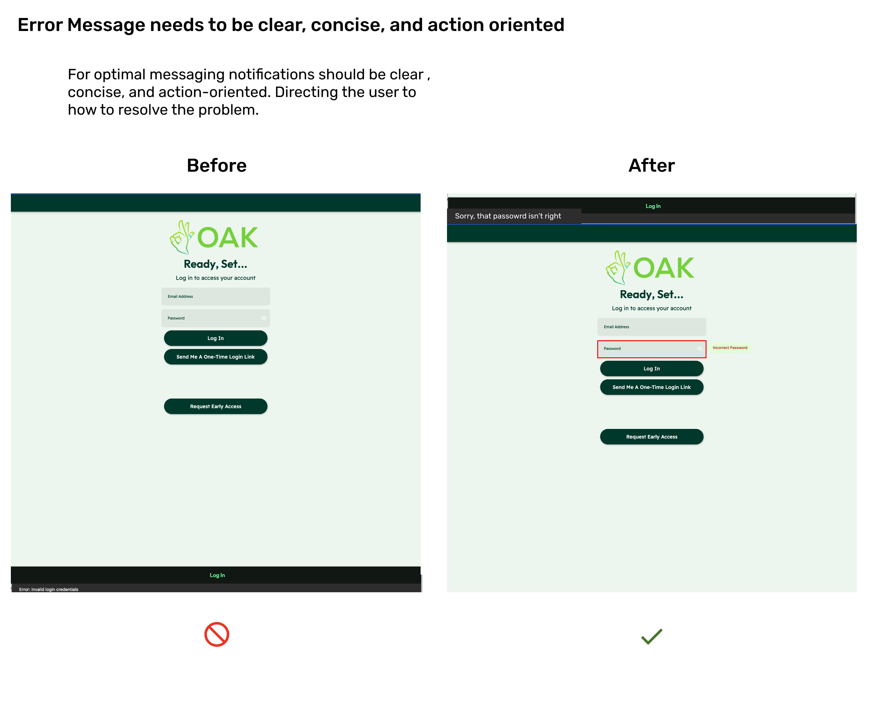

Oak AI / RESEARCH TO DESIGN · PRODUCT CLARITY
Turn a UX audit into decisions people can see.
Connecting inconsistent navigation and unclear feedback to concrete design recommendations for an early AI product.


THE PROBLEM
What needed to become clearer?
An early AI product had multiple ways into the experience, inconsistent labels, and feedback that could be easy to miss. The team needed more than a list of problems: it needed to see what a clearer experience could look like.
MY CONTRIBUTION
From an open question to a design decision.
I connected findings from the usability review to design recommendations for navigation, visual hierarchy, and error feedback. The artifacts paired each problem with a change the team could review.
DECISION 02
Put the error where the correction happens.
I proposed placing the login error beside the field, with a message explaining how to correct it. Showing the original interface and the recommendation together made the change specific enough to discuss with the team.

DECISION 03
Give the next iteration a shared visual language.
The color guidance assigns different jobs to brand, background, text, and feedback colors. I documented those roles so the next iteration could use a consistent visual language rather than make each screen’s choices independently.
OUTCOME & REFLECTION
A product direction the team could review.
I turned the audit into visual alternatives for navigation and login feedback, with shared color guidance. Each recommendation connected an identified problem to a specific change and the reason for making it.
Research becomes easier to act on when people can see the decision it changes. For me, the useful handoff is the problem beside the proposed behavior, with enough reasoning for the team to challenge the choice.
The next question I would test
I would validate whether first-time users can choose a starting point, understand the product’s value, and recover from login errors without assistance.
Original heuristic evaluation and design recommendation exports. Screens show proposed changes; implementation and outcome measurement are unverified.